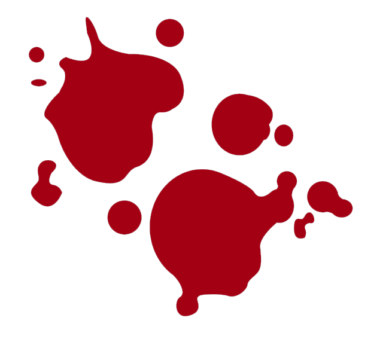
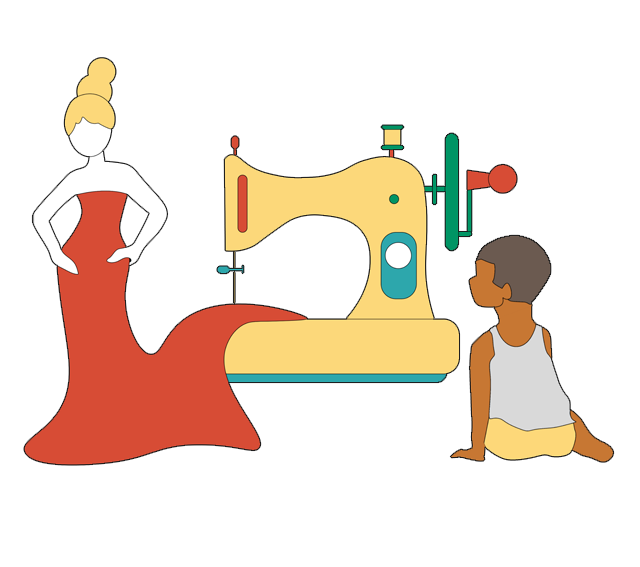
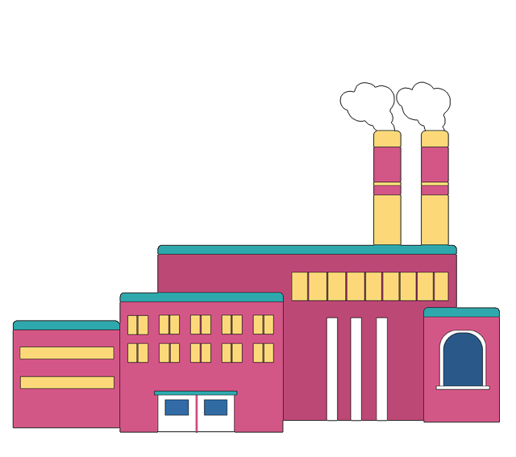

เบื้องหลังของผ้าที่ได้มา
แท้จริงมีอะไร
ผ้าแต่ละชิ้นที่นำมาตัดเย็บเสื้อผ้าให้เราได้ใส่
แท้จริงแล้วอาจจะต้องแลกมากับเสื้อของใครบางคนที่เปื้อนเลือด
. . ใช่ อ่านไม่ผิด . .
เบื้องหลังแฟชั่นสวยงาม
คือเลือดและชีวิต

โรงงานนรก
fast fashion
อุตสาหกรรมเสื้อผ้าสำเร็จรูป เปลี่ยนแปลงอย่างรวดเร็ว ในช่วงสิบปีที่ผ่านมา
ด้วยเทคโนยีการผลิตที่ก้าวหน้าขึ้น ทำให้สินค้าที่ผลิตออกมามีความสวยงาม ใส่สบาย ทันสมัย
เพราะความรวดเร็วในการผลิตและราคาถูกลง แต่ที่ไม่เคย เปลี่ยนไปเลยคือ
ต้องพึ่งพาแรงงานราคาถูกในการตัดเย็บ
เสื้อผ้าที่คุณสวมใส่อยู่ อาจมาจากน้ำพักน้ำแรงของ “เด็ก”

บางโรงงานใช้แรงงานเด็ก
ซึ่งปัจจุบัน มีแรงงานเด็กกว่า
170 ล้านชีวิต ที่ทำงานใน
อุตสาหกรรมแฟชั่น ซึ่งคิดเป็น
11% ของจำนวนเด็กทั่วโลก
ระบบทุนนิยมเติบโตเข้มแข็ง ต้องอยู่บนพื้นฐานเดิม คือ เอากำไรให้มากที่สุด
ด้วยการลดต้นทุนการผลิตให้ต่ำ เท่าที่จะต่ำได้ เพราะการแข่งขันที่รุนแรงขึ้นทำให้ราคา
สินค้าเป็นหัวใจสำคัญของการแข่งขันที่จะเอาชนะคู่แข่ง เมื่อไม่สามารถตั้งราคาสูง ๆ
แต่ยังต้องการกำไรมาก ๆ วิธีเดียวคือ ลดต้นทุนการผลิต
ร้านของเราจึงมีฐานการผลิตเสื้อผ้าที่มีค่าแรงถูก
ที่สุดในโลกคนงานในโรงงานตัดเย็บเสื้อผ้าได้รับ
ค่าจ้างขั้นต่ำ และเพื่อให้ได้เสื้อผ้าราคาถูกเราจึง
สร้างโรงงานที่ไม่ได้มาตรฐาน ไม่มีระบบความปลอดภัย
ก่อสร้างไม่ถูกแบบใช้วัสดุที่ไม่มีคุณภาพ
